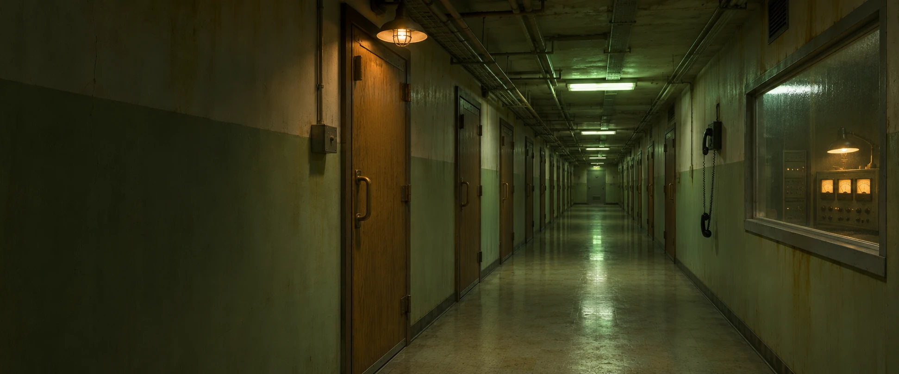

02:17:00 / BASELINE
An empty room.
Before the second trial we took the brass bell out. The chamber inventory now reads one table, one microphone, one Oracle.
Introducing Oracle One
An ambient intelligence that reads the rhythms of a room and anticipates what comes next.
The instrument
A quiet object with three working layers. Together, they turn changes in the room into a forecast you can see.
A cast glass sphere folds the indicator light into a single floating horizon. Its position gives each forecast a visible form.
The technology
Listen to a reference strike from our test room. The upper trace is Oracle’s forecast. The lower trace is the room recording.
Field notes
Extracts from the overnight log.
Test chamber B, west annex.
02:17:00 / BASELINE
Before the second trial we took the brass bell out. The chamber inventory now reads one table, one microphone, one Oracle.
02:17:05 / RETURN SIGNAL
Even the scrape of a thumbnail against the rim was there. We laid tonight’s recording over yesterday’s. The two scratches cancelled perfectly.
02:17:05 / AMENDMENT
The room channel had been recording the forecast. When we repaired the cable, accuracy fell. By morning someone had put it back.

After visiting hours
The porter keeps three envelopes under the counter. Take one. The person who left it will receive your report in the morning.
OPEN CIRCUIT
Salt / the residue
Grind a bell to powder. Sift out the ringing. At the bottom of the sieve is a little slip of paper with the word bell on it.
The last observation
I have written down what happens next. One little sound and I can file this under things that happened to me.